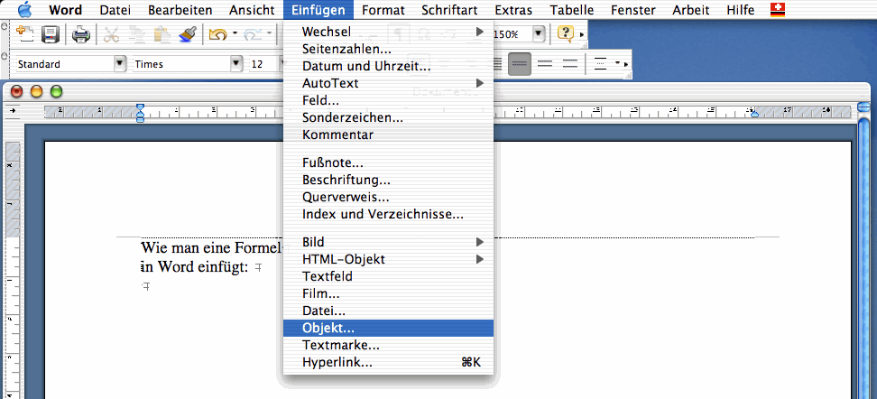
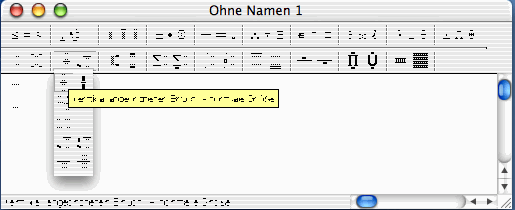

Formeln in Word-Dokumenten
Wie schreibt man Formeln mit Microsoft Word?
Platzieren Sie die Einfügemarke an der Stelle, wo sie eine Formel einsetzen wollen. Wählen Sie aus dem Menu "Einfügen" - "Objekt..." und dann
"Microsoft Equation" (Mac) resp. "Microsoft Formeleditor" (Windows)
Screenshot:

Abb. 1: Bildschirmansicht beim Einfügen einer Formel
Dann startet der Formeleditor (ein kleines, separates Programm). Wählen Sie aus dem Menu die gewüschten Formatvorlagen, z.B. Bruch, kleiner Bruch, Plus/Minus-Zeichen, Index hoch oder tief, Wurzel, Abstand, etc.

Abb. 2: Bildschirmansicht des Formeleditor-Menus
Die offizielle Formatierung ist wie folgt:
Formeln werden kursiv gesetzt. Multiplikationen werden als Punkte oder Leerschläge angegeben (nie Sterne).
Grössen (Zahl mit Einheit) werden gerade gesetzt. Zwischen Zahl und Einheit ist ein Leerschlag.
Schliessen Sie den Formeleditor. Formeln können wie Bilder durch Copy-and-Paste verschoben oder dupliziert werden. Wenn Sie eine Formel abändern wollen, können Sie den Formeleditor einfach mit einem Doppelklick auf die Formel starten.
Sie können sich das Leben erleichtern, wenn Sie den Formeleditor als Symbol auf der Toolbar (Ikone auf der Menuleiste) von Word platzieren.
29. September 2007 / Martin Lieberherr
Zum Seitenanfang